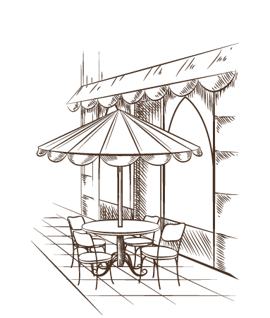

Brand Intro
Background
Project Background
셀렉토 커피는 공간을, 시간을, 커피를 선택하는 것을 브랜드 컨셉으로 잡고 있습니다. 컨셉대로 메뉴에 커스터마이징을 할 수 있으며 기부행사도 행하고 있습니다만 이런한 브랜드 특징이나 스토리가 홈페이지에서는 잘 전달대고 있지 않습니다.
셀렉토 커피를 방문하는 소비자들이 원하는 정보를 얻고자 하는데 있어서 불편함이 없도록 불필요한 콘텐츠는 과감하게 지우고 필요한 콘텐츠로만 구성했습니다. 또한 레이아웃을 정리하고 이미지와 애니메이션 효과를 활용하여 정보를 보다 효과적으로 전달하고자 합니다.
Project Renewal Take To
1
복잡한 콘텐츠들을 보기 쉽게 정리한다2
브랜드 이미지를 제대로 전달해야한다3
캠페인 내용을 사용자가 이해하기 쉽게 해야한다Needs & Solution
니즈 (Needs)
솔루션 (Solution)
이미지는 적절하게 줄이고 필요한 정보에만 초점을 맞춥니다.
캠페인 내용에 맞는 이미지를 사용하여
캠페인 홍보를 합니다
레이아웃을 정돈합니다
Concep
나만의 시간, 나만의 선택
.png)
.png)
.png)
브랜드 스토리(나만의 메뉴)를 강조시킬 디자인 컨셉에 알맞은 키워드를 도출하여 적용했습니다
Project Goal
셀렉토커피의 메인화면을 리뉴얼 하는 것을 통해
브랜드의 가치관을 잘 나타내는 사이트를 디자인하고자 했습니다
브랜드의 가치관을 잘 나타내는 사이트를 디자인하고자 했습니다
1
사이트를 통해 셀렉토의 브랜드가 가진 가치관을 알기 쉽게 전달할 수 있습니다.
2
캠페인의 정보를 효과적으로 사용자에게 전달할 수 있습니다.
3
정리된 레이아웃을 통해 사용자가 정보를 쉽게 얻을 수 있습니다.

Overview

Design System
-
- Happiness Sans Title
- Happiness Sans 30
- Happiness Sans 25
-
- Happiness Sans Bold
- Happiness Sans 35
- Happiness Sans 20
-
- Happiness Sans Regular
- Happiness Sans 25
- Happiness Sans 20
- Happiness Sans 15
- Happiness Sans 12
#FF4713
#A06950
#57342E
#333333

Main Screen
- Main Page 각 콘텐츠의 연결성을 부여하여 자연스럽게 시선을 아래로 유도함으로써 셀렉토의 브랜드 가치관과 내용을 알기 쉽게 전달하도록 제작하였습니다.
- Scrolling Page 자연스러운 시각적 흐름 텍스트의 효율적인 시각 흐름을 고려하여 각 콘텐츠의 목적을 스크롤 페이지에 배치하였습니다
- Brand Intro 브랜드 스토리 셀렉토가 가진 브랜드 스토리의 내용을 요약하여 사용자들이 쉽게 브랜드 가치를 이해하고 자연스럽게 시선을 아래 콘텐츠로 유도했습니다.
- Selecto Menu 음료의 토핑을 select 셀렉토 메뉴의 배경을 심플하게 하는 것으로 음료를 강조하고 가로 스크롤을 활용하여 다양한 음료를 홍보하였습니다.
- ONE-FOR-OME 커피 한 잔으로 향기로운 세상 만들기 애니메이션 요소를 사용하여 직관적으로 캠페인의 내용을 보여 줌으로써 사용자가 보다 더 관심을 가질 수 있게 하였습니다.
- Event 이벤트를 한 눈에 인스타에서 홍보하는 이벤트 내용을 배경을 넣어 페이지에 분위기를 바꾸는 것으로 눈에 잘 들어오게 연출하였습니다.
- Brand Gallery 친근감을 느낄 수 있게 가로 스크롤 콘텐츠를 통해 제공되는 실제 오프라인 사진은 사용자가 보다 매장에 친근감을 느낄 수 있도록 하였습니다.
- Brand Competitivity 눈에 잘 들어오는 크기 브랜드 홍보 영상을 통해 셀렉토가 가지는 경쟁력을 보여주었습니다.

Grid System